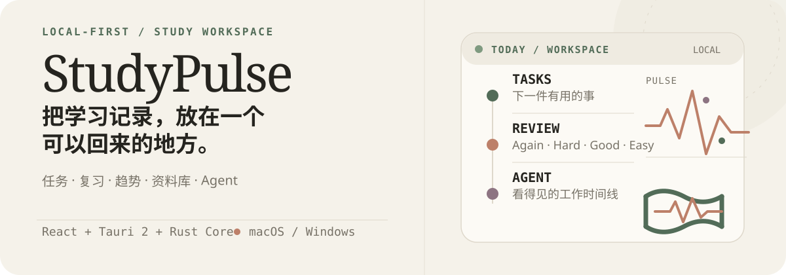
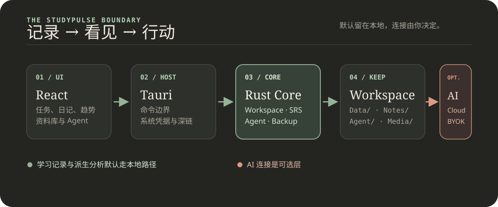

记录
任务、成绩、考试、错题、学习时长和学习日记。
重要的事，不再丢在某个标签页里。StudyPulse
计划重要的事，复习错过的事，看见真正的进步——都在一个本地优先的学习工作区里。

不用在任务清单、笔记、计时器、闪卡和 AI 标签页之间来回切换。一个 Workspace，承接完整的一天。
建立你的下一天 ↗少一点切换，多一点信号。StudyPulse 把零散的学习活动变成真正能坚持的节奏。
任务、成绩、考试、错题、学习时长和学习日记。
重要的事，不再丢在某个标签页里。Today 快照、连续学习、热力图、心情、精力和科目趋势。
把活动变成可以行动的规律。把错题变成文字闪卡，用 Again / Hard / Good / Easy 推进复习。
每一道错题，都变成下一次练习。用资料库和带权限确认的 Agent，处理需要帮助的下一步。
从问题走到答案，不丢失上下文。任务、笔记、计时、复习和日记放在一起。
从时长、心情、精力到科目变化，看到规律。
计划完成之后，行动依然留在眼前。
不需要 AI。 没有连接提供商，本地学习闭环依然完整；需要时，再让 AI 放大效率。
AI 可以教练、研究、规划、模拟和可视化；核心学习记录依然留在本地，连接方式由你决定。

学习数据、Agent runs、Notebook 历史和导入资料留在你选择的 Workspace。
Cloud token 和 BYOK key 只进 Keychain 或 Credential Manager，不写入 Workspace、日志或 localStorage。
写入、破坏性操作和代码执行会先展示预览，再请求用户确认。
可以选 StudyPulse Cloud AI、任意 OpenAI-compatible BYOK，或完全不接 AI。
一个可迁移的 Workspace，让每个科目、每次学习和每轮复习都有地方落下。下一步，也就更容易找到。
创建或打开本地 Workspace，可以迁移、备份，也可以随时回来。
任务、考试、错题、时长、日记和资料彼此保持连接。
只有在教练、规划或研究有帮助时，再连接 Cloud AI 或 BYOK。
打开桌面客户端，把下一件有用的事放到眼前。
$ npm install $ npm run tauri:dev
Diary / Trends / Flashcards · 备份 · 报告 · AI Coach · Agent 主流程
Health/Recovery · 跨端同步 · 完整日历集成 · 签名与分发